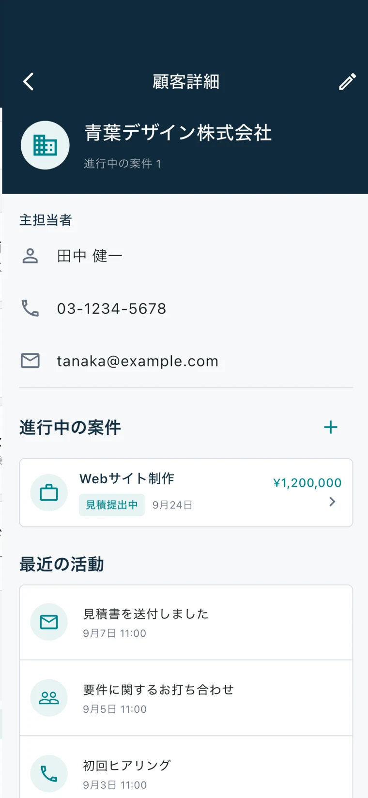
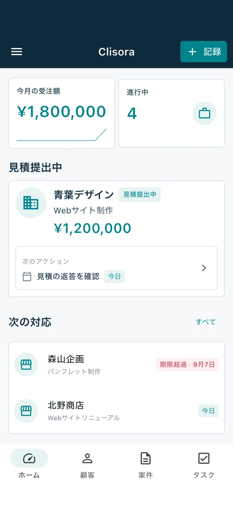
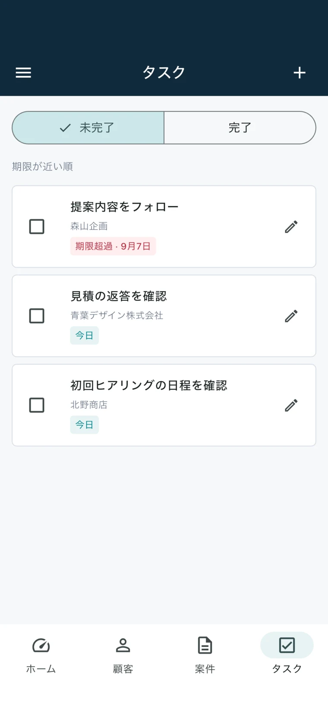
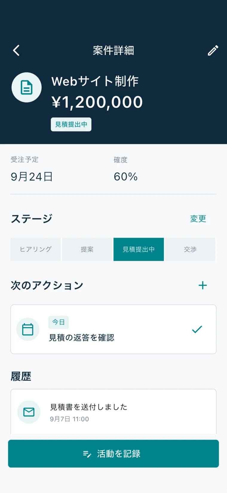

01 / CUSTOMERS会う前に、さっと振り返る。

01 — 顧客・活動履歴
前回の会話から、
次の商談へ。
「何を話したか」「どの案件が動いているか」。顧客ごとにまとまった情報を見れば、次の連絡にも迷いません。
- 担当者・メール・電話番号をまとめて管理
- 関連する案件と活動履歴をひとつの画面で確認
- 顧客名・担当者名からすばやく検索

個人事業主・フリーランスのための CRM
顧客も、商談も、次の一手も。
散らばる情報をひとつにまとめて、
目の前の仕事に、もっと集中。
アカウント登録不要 ／ iPhone対応（Android版は公開準備中）
無料でご利用いただけます。アプリ内にバナー広告を表示します。


YOUR WORK, IN ONE PLACE
前回の打ち合わせはメモに。見積の状況はメールに。
次の連絡は、頭の中に。
Clisoraは、顧客情報・商談の進捗・活動履歴・次の対応をまとめる、無料の顧客管理アプリです。ひとりで営業から顧客対応まで行うあなたに、情報を探す時間を減らす場所を。
連絡先と、これまでの会話。
現在地と、次のアクション。
やることと、いつまでに。
MADE FOR YOUR EVERYDAY

01 — 顧客・活動履歴
「何を話したか」「どの案件が動いているか」。顧客ごとにまとまった情報を見れば、次の連絡にも迷いません。

02 — 案件・商談管理
ヒアリングから、提案・見積・交渉、そして受注へ。案件の状態と次にすべきことを、一緒に整理できます。
03 — タスク・フォローアップ
会話を記録したら、次の対応もその場で残す。顧客・案件に紐づくタスクで、仕事の流れを途切れさせません。
画面は架空のサンプルデータです。表示内容はアプリのバージョンにより異なる場合があります。
A SMALL HABIT. A CLEARER DAY.
大きな仕組みをつくらなくても。
毎日の小さな記録から、仕事は整います。
名前や連絡先を入力。アカウント登録は不要です。
商談の内容、進捗、やりとりを顧客に紐づけます。
やることと期限を残して、ホームから確認します。
FREE TO USE
顧客管理を始めたい。その気持ちだけで十分。
登録の手間も、月々の利用料も必要ありません。
KNOW YOUR APP
Clisoraは、個人の端末で使う顧客管理アプリ。
できることと、対応していないことを明確にしています。
QUESTIONS, ANSWERED
ひとりで営業や顧客対応を行う個人事業主・フリーランス向けのアプリです。制作、デザイン、コンサルティング、受託業務などで、顧客情報・商談の進捗・次の対応をまとめたい方に向いています。
はい。月額料金やアプリ内課金なしで利用できます。アプリ内にはバナー広告が表示されます。
不要です。メールアドレスやパスワードを登録せずに、顧客や案件の管理を始められます。
顧客・案件・活動・タスクなどの業務データは端末内に保存します。自動でクラウドに同期する機能はありません。広告配信に伴う情報の取り扱いについては、プライバシーポリシーをご確認ください。
パスワード付きの暗号化バックアップを手動で保存し、復元できます。バックアップは端末外にも保管してください。パスワードを忘れた場合、再発行や復号はできません。
現在、チームでの共同編集や端末間の自動同期には対応していません。個人の端末で顧客情報や案件を管理する用途を想定しています。
設定でリマインダーを有効にし、端末の通知を許可すると利用できます。通知のタイミングは端末の設定やOSの動作に影響される場合があります。
はい。金額は数値のみで記録するため、円・ドル・ユーロなど、どの通貨でも利用できます。通貨換算を行う機能ではないため、集計する金額は同じ通貨で揃えてください。
YOUR NEXT MOVE STARTS HERE
ひとりの仕事を、ひとつにまとめよう。
無料・アカウント登録不要／バナー広告あり